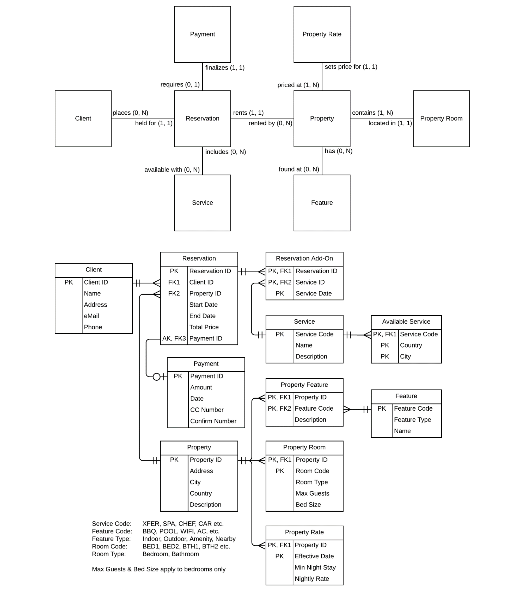
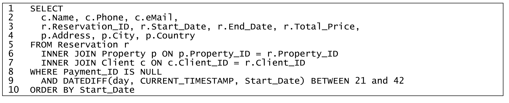
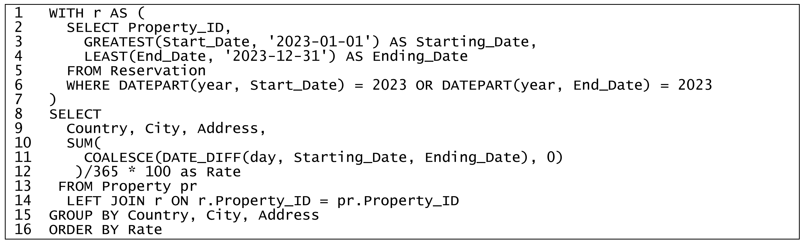
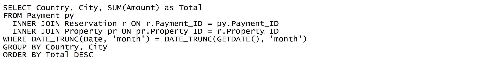
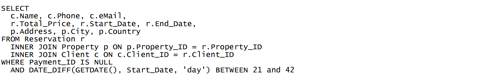
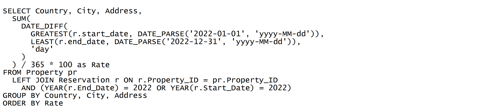
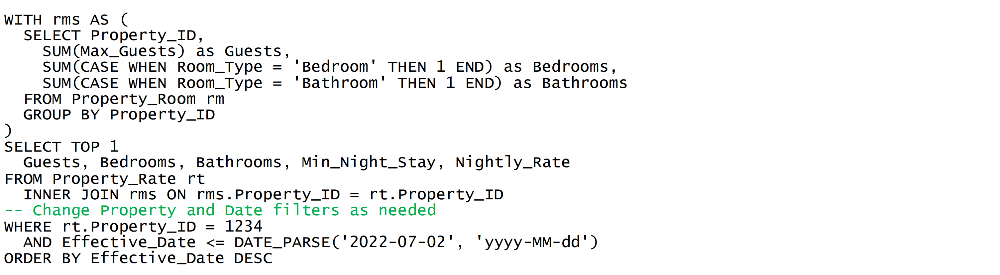
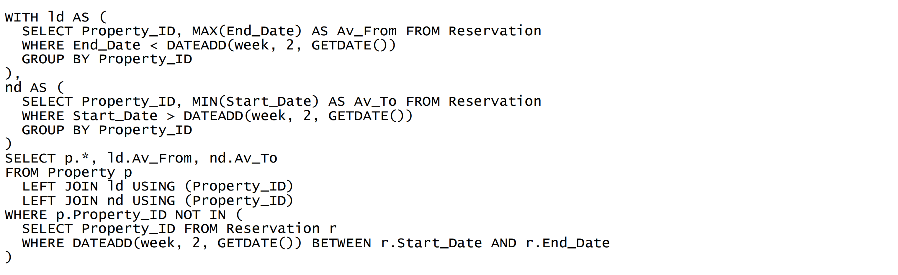

Practice 1.1 - ERD & SQL¶
UltraLux Retreats (ULR) offers exclusive private vacation villas to rent for holidays or functions. When making a reservation, clients can also request extra services such as airport transfers, spa treatments, car and driver, or even a chef to prepare meals. Payment must be made a month prior to reservation start, or the URL reserves the right to cancel the reservation.
The following Entity-Relationship Diagram documents part of the database that supports their website and online reservations system.

(1)¶
For each of the following questions EXPLAIN and/or DISCUSS with specific reference to RELEVANT parts of the ERD.
(i)¶
For each of the assertions below, to what extent does the database structure imply that the assertion is true or not?
(a)¶
Q: When a client makes a booking, the reservation must be for one continuous series of days.
A: Yes. The Reservation entity has Start Date and End Date fields, and there is no structure indicates that one reservation can be divided to multiple reservations. So, every reservation must cover a continuous range of days, from Start Date to End Date.
(b)¶
Q: A service may be available across an entire country, irrespective of city in that country.
A: No. In the Available Service entity, Service Code, Country, and City are combined PKs, which means that for a given available service, City must be specified and must not be null.
(c)¶
Q: Property features are generic and not particularly distinctive. The features available at any given property can only be displayed as a simple list.
A: Yes. All available features are stored in Feature entity, and can be shared by all properties, so there is no property-specific features. The feature list of one property can be simply generated by filtering in Property Feature entity.
(ii)¶
Q: Can the total price for a reservation, including charges for all services, be calculated automatically by the system?
A: No.
First, although the Property Rate entity contain the price per day (Nightly Rate) for a property, one property is linked with multiple property rates. From only ERD, there no logic indicating which rate is selected for each reservation. It may be possible that the DBMS enforces the latest rate, but this logic is not shown in ERD.
Second, there are no fields in the Service entity indicating its price, and there is no logic to represent how many times a particular service was used within a reservation in Reservation Add-On entity.
So, based on the ERD alone, there is no logic indicating how the charges for properties or services are calculated for each reservation.
(iii)¶
Q: After a recent increase in the number of late cancellations, ULR wants to institute a policy to have customers pay a deposit of 50% at the time of booking. The remaining balance would remain due one month prior to reservation start. Can the existing database structure support this new policy?
A: No. The relationship between Reservation and Payments indicates that one reservation has one and only one payments, linked by Payment ID as a PK in Payment and a FK in Reservation. So, partial payments is not allowed in this case.
(2)¶
For each of the following questions EXPLAIN and/or DISCUSS with specific reference to RELEVANT parts of the ERD and the SQL below.

(i)¶
Q: What is the overall purpose of the query – how is the information returned useful to ULR? What actions or decisions do you think an ULR employee might make in response to the information returned by this query?
A: This SQL filters the reservations that have not been paid, and there are 21 to 42 days left before clients’ trip start. Then it returns the basic information of those reservation and related property and clients. Using these information, ULR employee can contact the client to remind them to make the payment.
(ii)¶
Q: What is the business meaning of the filter condition found on line 8?
A: The Payment ID is null value. This indicates that the reservation order has not yet been paid.
(iii)¶
Q: What is the business meaning of the filter condition found in line 9? How do the range of values relate to URL’s operations or policies?
A: There are 21 to 42 days before clients’ trip start. If payment has not been made 21 to 42 days before the trip, the client may be reminded. If payment has not been made less than 21 days before the trip, the reservation may be canceled.
(3)¶
For each of the following questions EXPLAIN and/or DISCUSS with specific reference to RELEVANT parts of the ERD and the SQL below.

(i)¶
Q: What is the overall purpose of the query – how is the information returned useful to ULR? What actions or decisions do you think a senior manager at ULR might make in response to the information returned by this query?
A: This SQL is used to calculate the occupation rate of each property address within 2023. The result can be used to analyse which property addresses are popular and which are not. Further analysis could include summarizing occupancy rates by country and city. Based on this, ULR could take measures to improve occupancy and increase revenue. For example, offering discounts in property addresses with low occupancy, or developing more properties in countries or cities with high occupancy.
(ii)¶
Q: What is the purpose of the COALESCE found on line 11? If the database does not allow NULL values in the Start Date and End Date fields in the Reservation table, do we need this COALESCE?
A: If the occupation days is null value, then this function will replace it with 0. It is still necessary, because if a property had not been rented in 2023, its Starting_Date and Ending_Date will still be null after left join.
(iii)¶
Q: Is the calculation on lines 10 to 12 an example of conditional aggregation?
A: No. Conditional aggregation involves using aggregate functions with conditional logic (CASE WHEN ...). In this case, COALESCE is just a null-handling tool. It is not a conditional logic.
(4)¶
For each SQL statement (i) through (v) below, consider the information returned by each query. Using everyday business language, describe the nature or business intent, and usefulness, of that information to ULR staff or customers.
DO NOT rephrase the query (e.g., selects all records where <field> is <some criteria> and sorts by <field>).
AVOID making assumptions about the way you think ULR would/should typically keep records. Answer only with reference to information as it is recorded in the database.
(i)¶
Q:

A: This SQL shows the total revenue received so far this month for each city, and order them from highest to lowest revenue. This SQL help ULR evaluate which cities or countries are generating the most revenue during the current month.
(ii)¶
Q:

A: This SQL filters the reservations that have not been paid, and there are 21 to 42 days left before clients’ trip start. Then it returns the basic information of those reservation and related property and clients. Using these information, ULR employee can contact the client to remind them to make the payment.
(iii)¶
Q:

A: This SQL is used to calculate the occupation rate of each property address within 2022. The result can be used to analyse which property addresses are popular and which are not. Further analysis could include summarizing occupancy rates by country and city. Based on this, ULR could take measures to improve occupancy and increase revenue. For example, offering discounts in property addresses with low occupancy, or developing more properties in countries or cities with high occupancy.
(iv)¶
Q:

A: This SQL retrieves the historical prices and room configurations, including maximum number of guests, number of bedrooms, and number of bathrooms, for Property 1234 after 2022-07-02. It reveals the historical look-up of a property’s pricing and capacity. It can be used to examine pricing trends and assess whether the rates align with the property's capacity, in order to support pricing decisions.
(v)¶
Q:

A: This SQL identifies properties that will be completely available starting two weeks from today. It also shows when each of these properties was last booked and when they will be booked next. This can be used to help ULR identify properties that will be available from a specific of time, in order to set advertisement strategies.